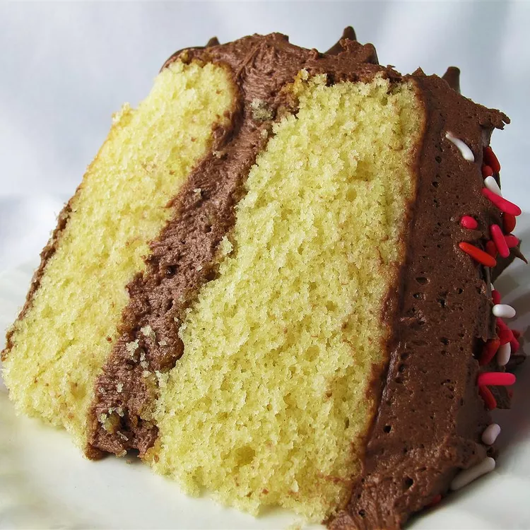

Yellow Cake

Description
Delicious simple and easy, like your mom. Nah I'm kidding, not about the cake though
It's delicious and this recipe will teach you how to make it.
Ingredients
- 2 cups of flour
- 3 ½ teaspoons baking powder
- 1 teaspoon salt
- 1 ½ cups white sugar
- ½ cup shortening
- 3 eggs
- 1 cup milk
- 1 teaspoon vanilla extract
Steps